Windows 10에 WSL2 설치하기
일반 Windows 10 PC에서 WSL2를 통해 우분투를 설치해보자

지금부터 Windows 10에 Linux용 Windows 하위 시스템 설치 가이드를 참고하여 내 윈도우 시스템에 리눅스를 설치해보겠다. 윈도우에 리눅스를 설치해서 사용하려는 이유는 여러가지가 있겠지만 나의 경우는 Windows 10 환경에서 개발을 할 때 설치파일 관리, 경로 설정 등 부가적으로 관리해줘야 하는 요소들이 많아져서 불편함이 많았다. 이를 해결하면서 윈도우에서 터미널을 꾸며 사용하고 싶어서 설치를 하게 되었다.
자신의 윈도우에 WSL2가 이미 설치되어 있거나 이 포스트를 통해 설치한 사용자는 윈도우 터미널에 ZSH 설치하기를 통해 터미널을 자신에 맞게 멋지게 바꿔보는걸 추천한다.
WSL2 수동설치 진행하기 #
설치 가이드에서도 나와있는 것처럼 설치 방법에는 자동설치와 수동설치 둘 중 하나를 선택하여 진행할 수 있는데 앞의 것의 경우 간편하지만 Windows 참가자 프로그램에 등록해야하고 특정 빌드 이상으로 업그레이드를 해야하기 때문에 수동 설치로 진행하기로 했다.
1단계 - Linux용 Windows 하위 시스템 사용 #
우선 WSL2를 사용할 수 있도록 설정해주기 위해 터미널을 관리자 권한으로 실행 으로 열어준다.
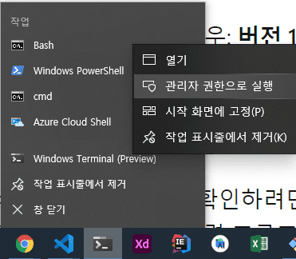
Caution: 나는 windows 터미널을 통해 PowerShell을 실행 시켰는데 아직 windows 터미널이 설치되어 있지 않다면 바로 PowerShell을 관리자 권한으로 실행시키면 된다.
이제 아래 명령어를 통해 Linux용 Windows 하위 시스템 옵션 기능을 사용하도록 설정해보자.
dism.exe /online /enable-feature /featurename:Microsoft-Windows-Subsystem-Linux /all /norestart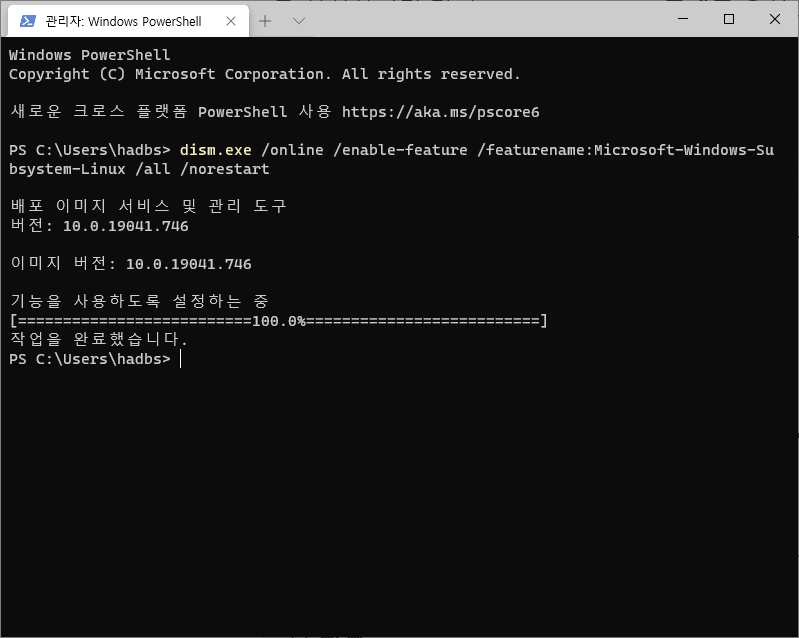
2단계 - WSL 2 실행을 위한 요구 사항 확인 #
일반적인 윈도우 PC(x64 시스템)의 경우: 버전 1903 이상, 빌드 18362 이상에서 WSL2를 설치할 수 있다. 자신의 PC가 이 버전보다 위인지 확인해보자.
버전 및 빌드 번호를 확인하려면 Windows 로고 키 + R 을 선택하고, winver 를 입력하고, 확인한다.
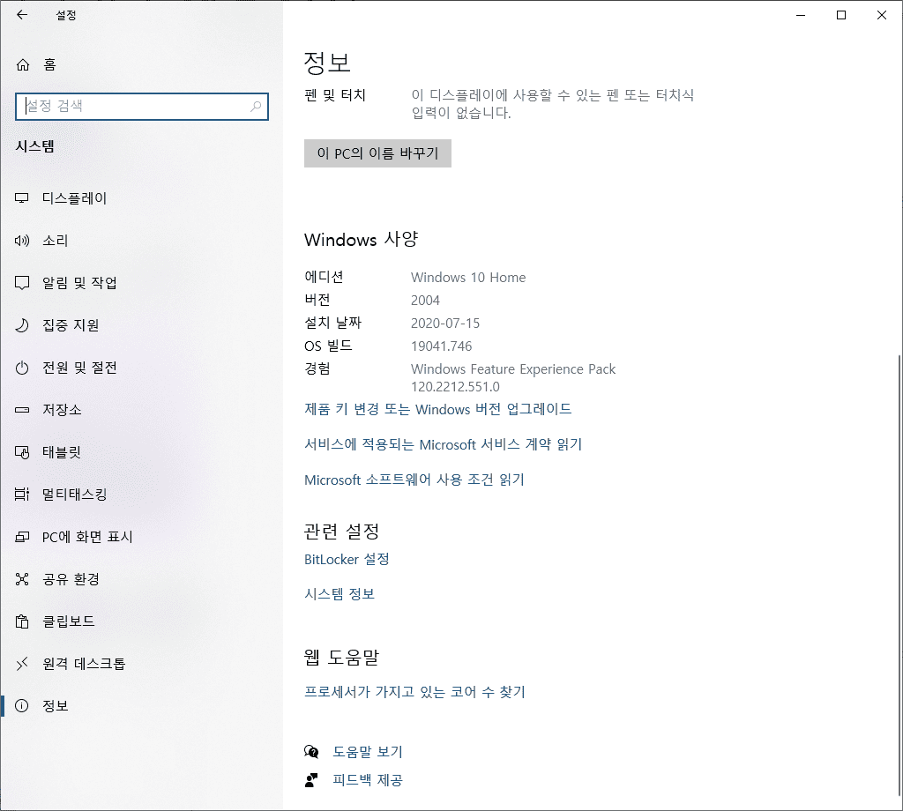
3단계 - Virtual Machine 기능 사용 #
자 이제 설치하기 전 마지막 단계이다. Virtual Machine 플랫폼 옵션기능을 사용하도록 설정하자. 완료했으면 컴퓨터를 재부팅 한다.
dism.exe /online /enable-feature /featurename:VirtualMachinePlatform /all /norestart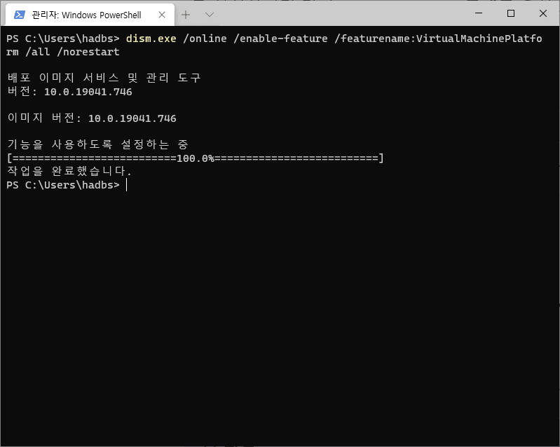
4단계 - Linux 커널 업데이트 패키지 다운로드 #
자 이제 x64 머신용 최신 WSL2 Linux 커널 업데이트 패키지를 다운 받아보자. 이 링크는 여기에서도 확인할 수 있다.
다운 받은 wsl_update_x64.msi 파일을 실행하여 설치를 진행한다.
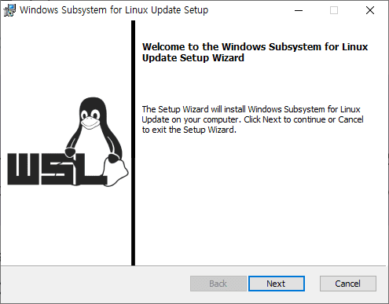
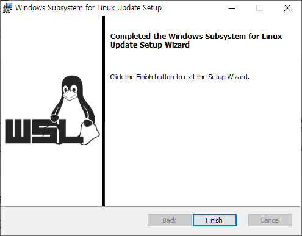
5단계 - WSL 2를 기본 버전으로 설정 #
자 이제 다시 Posershell로 돌아가서 아래 명령어를 통해 WSL2를 기본버전으로 설정해준다.
wsl --set-default-version 2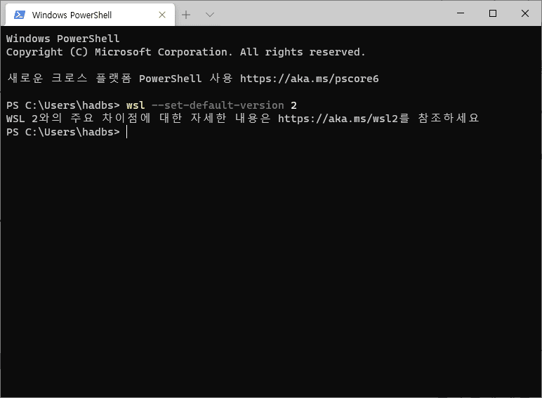
6단계 - 선택한 Linux 배포 설치 #
이제 준비는 끝났다. Microsoft Store에서 자신이 원하는 리눅스 버전을 골라서 설치를 진행하면 되는데 나는 가장 친숙한 Ubuntu를 선택하였다.
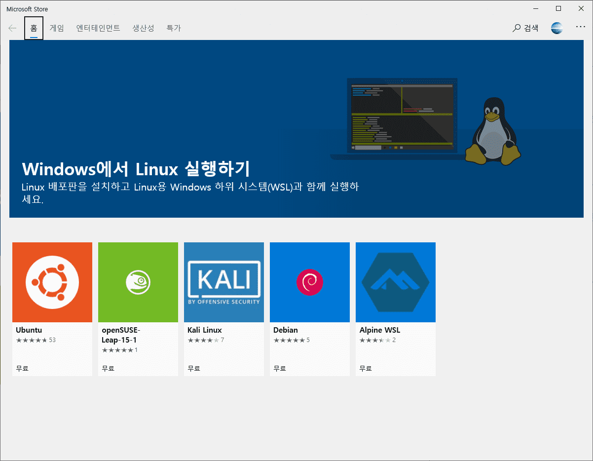
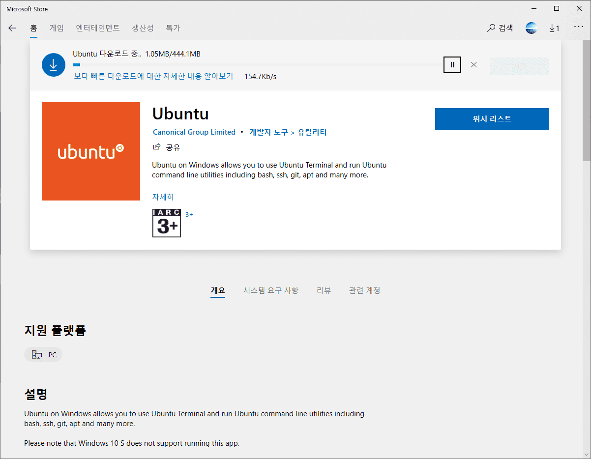
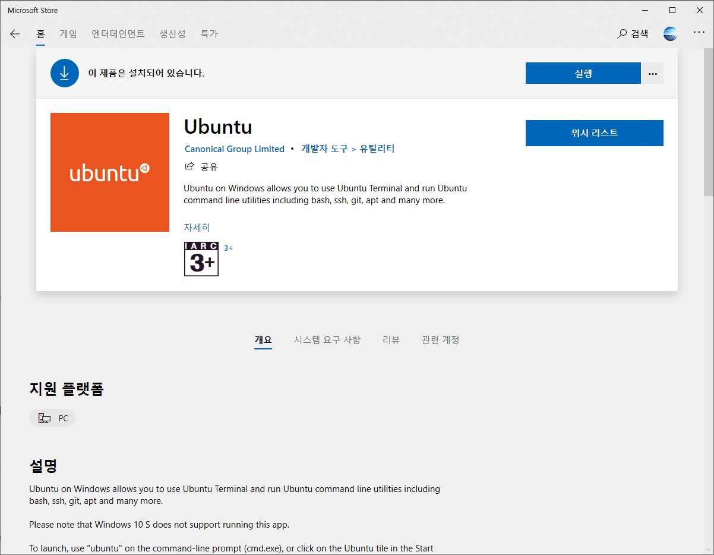
다운 받고 실행하면 새 Linux 배포에 대한 사용자 계정 및 암호를 만들어야 한다.
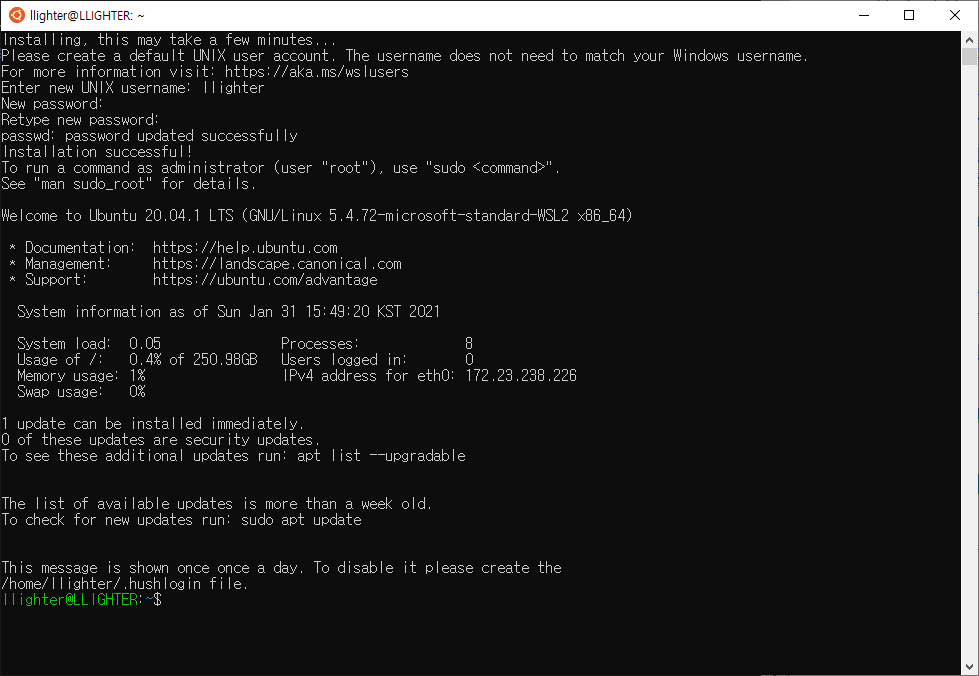
계정 및 비밀번호를 설정해주면 끝이다. 추가적으로 처음 설치를 하면 패키지 관리자를 업데이트 해주는 것이 좋다.
sudo apt update && sudo apt upgrade축하합니다. 이제 윈도우에서 Cmd를 벗어나 터미널로 개발을 시작할 수 있게 됐습니다. 윈도우에서 리눅스 라이프를 즐겨보도록 하죠.
메인 사진은 Unsplash에서Ümit Yıldırım님이 제공한 사진입니다.